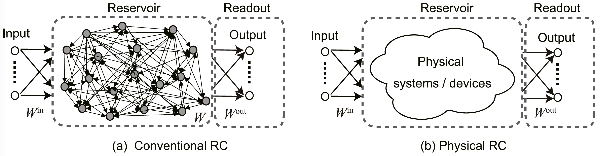
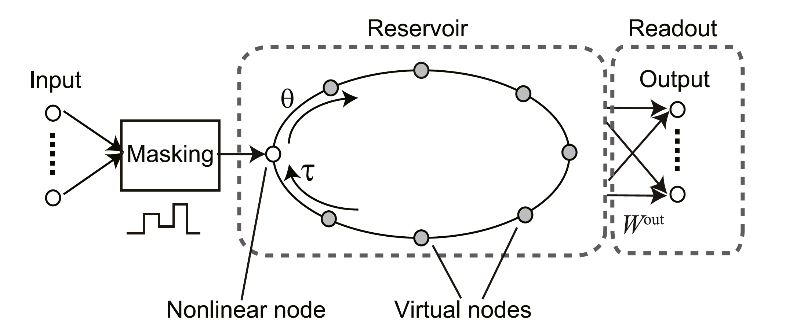
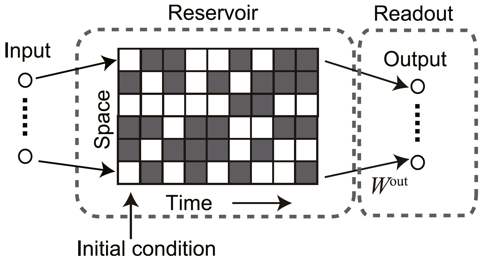

Physical Reservoir Computing
Reservoir computing (RC) is derived from recurrent neural network (RNN). They are different from RNN in that the weights on the recurrent connections are not trained (this part is called a reservoir), but only the weights in the readout are trained to map to the desired value. The basic frameworks include echo state network (ESN) and liquid state machine (LSM).

Physical reservoir computing (RC) follows the concept of reservoir and readout, but it uses reservoirs based on physical phenomena. The motivation for the physical implementation of reservoirs is to realize fast information processing devices with low learning costs. It also has advantage in hardware implementation without adaptive updating. While it seems any physical dynamical systems can replace RNNs, there are some requirements
This note summarizes parts of Recent advances in physical reservoir computing: A review that relate to morphological computing, control, and frameworks with biological neurons. This paper categorizes physical reservoirs based on the type of dynamical system and physical phenomenon. It also discusses the challenges.
Basic framework of RC
where is discrete time, is the input, is the reservoir state, is the output, and is the activation function. The weight is for the input-reservoir connections, is the weight in the reservoir, and is the weight matrix in the readout. Only is trained to minimize the difference between the network output and the desired output.
The purpose of LSM is to develop biologically relevant learning models using spiking neural networks (SNNs) with recurrent connectivity. Therefore, the reservoir units are typically given by excitatory and inhibitory spiking neurons, and the connection between neurons depends on the distance between their positions.
where and follow the denotation in ESN, and represents continuous time. The output here is encoded as a spike sequence, is the filter for transforming the input into the reservoir state, and is simply a readout mapping.
In order to approximate the desired output, the RNN-based reservoir must have the echo state property, also known as fading memory property. It means that the outputs corresponding to inputs that are close in the recent past are close even if those input are very different in the distant past, as if the system forgot earlier memory. The property can be obtained if the spectral radius (i.e. the maximum absolute eigenvalue of ) is less than unity for any input.
Requirements
These are the requirements for a physical reservoir to efficiently solve computational tasks.
- High dimensionality
By mapping the inputs into high-dimensional space, it might facilitate the separation of originally inseparable inputs.
- Nonlinearity
It is also for input separation. Moreover, it can be useful for extracting nonlinear dependencies of inputs in prediction tasks.
- Fading memory (short-term memory)
It corresponds to the echo state property in conventional RC.
- Separation property
It is required to separate the responses of a reservoir to distinct signals into different classes, and to be insensitive to unessential noises.
Dynamical system
- Delayed dynamical system
where is a function determining the flow of the system, and is the delay period.
Here is the single-node reservoir with delayed feedback.

The input is time-multiplexed by a mask function, and fe to the reservoir. In the reservoir, there are virtual nodes dividing the delayed period . The time interval between two consecutive nodes is . The states of these nodes, for , are used as the reservoir state at time .
- Cellular automata (CA)
CA is a simple dynamical system with discrete time and states. The reservoir implementation facilitates its rich dynamics.

Inputs are first mapped to the initial states of CA through an encoding procedure. Then, CA would start evolving based on its dynamics and the initial state. The entire state of the CA evolution is vectorized and used as a feature vector.
- Coupled oscillators
A system of coupled oscillators can be described as:
where is the oscillator state, is the dynamics of individual oscillators, and is the coupling function.
Physical phenomenon
- Mechanical RC
- Soft and compliant robots are difficult to control, but its complex dynamics can be leveraged for RC.
- morphological computing: outsourcing computation to a physical body
- mass-spring:
- muscular hydrostat system
- ESN-based controller for a soft arm
- information processing (for control)
- body dynamics as computational source (for control)
- robot control
- Biological RC
Challenges
-
How to design physical reservoirs for achieving high computational performance?
-
How much computational power can be attained by individual physical RC systems?
General issues include:
-
preprocessing: adequate information transformation of input data is necessary for good performance.
-
scaling: temporal and spatial scaling of input data affects performance.
-
design of reservoir: selection of physical systems, their size and haper-parameters is important. Mathematical analysis may help determining the settings.
-
training algorithm for the readout: this affects computation speed.
-
evaluation of computational performance
-
task-dependent measure: accuracy…
-